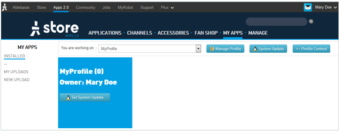
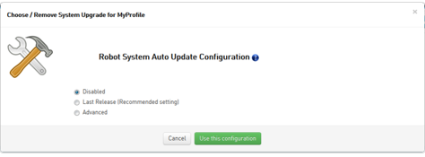

| Step | Action |
|---|---|
On the Apps 2.0 Store, choose My Apps. For further details, see: Accessing the Apps 2.0 Store. |
|
Click the Set System Update button.  |
|
| Choose the parameters you want. | |
Click the Use this configuration button. The Robot linked to your account will update its System accordingly. |
When a new system image has been downloaded from the Apps 2.0 Store:
The NAO Web page also displays a message:
For further details, see: Downloading a system image.
If you do not check the NAO Web page, then a notification informs you and suggests you should reboot your NAO.
For further details, see: Apps 2.0 Store - notifications.